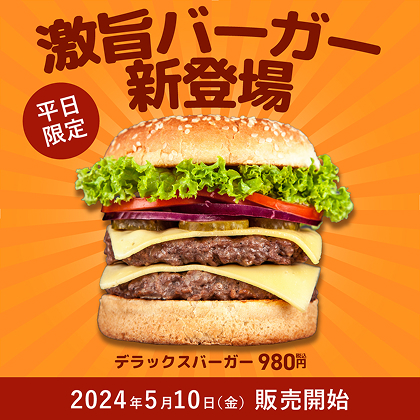
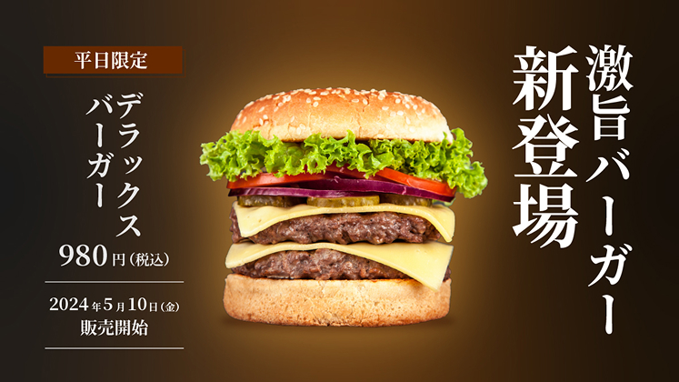

お問い合わせ
お問い合わせ


20代の男性会社員。 東京で一人暮らしをしている。 給料が低いが料理は苦手なので、普段は コンビニやスーパーの惣菜で食事を済ま せている。
Illustrator/photoshop
1週間/デザイン
POPは、はじけるPOP感が出るように『激旨バーガー新登 場」の文字をアーチにして、楽しさを演出しました。背景 は、温かみのあるオレンジにして集中線を付けることで、 ハンバーガーの美味しそうな感じを更に引き出しました。 高級感は、明朝体の使用で高級感を出し、ハンバーガーに 光彩を付けることで輝くハンバーガーを演出しました。 主要文字は縦にしてすスタイリッシュにすることで、POP との比較ができました。